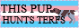
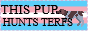

Blog thingie ma bob or just a place to think out loud
25.09.2025 Yipiee System and stuff
My official gender is already female. I already present as female everywhere. Whether at school, in my private life, in my family, also in public and just in general. And unfortunately, I will never feel like a complete woman because how I was born. And that is also the reason why I will always see myself as not complete and also somewhat invalid. And the sad thing is I am not the only one thinking like that.Because of this ongoing dysphoria and my own self Image of how I see myself and how I always feel, I limit myself and struggle with my private life in my relationship and also just my everyday life.
I feel completely alone and in a dead end or in a cage from which I can no longer escape. Because no one wants to or can help me. Since I am not considered as a whole woman by the system, this makes everything even more difficult. I am not taken seriously and am labeled as invalid by the system.
~Luna
17.09.2025 Feeling alone but atleast CD's are cool
After my therapy session I went into a CD and Vinyl Store. And I think it's really cool and somewhat a really cool experience to just buy a CD and you don't know yet how the Album sounds like. I am very much into Goth music currently (I think so atleast...). And for that genre it didn't have a lot of cd's.Also it was right next to the Punk Section which I also really appreciate since I listened a lot to Punk when I was younger. (not exclusively but I listened to a lot of "Die ärzte").
But yea I bought 2 CD's (theoritically 3)
- - Lydia Lunch - Widowspeak (2 CD's)
- - Star Trek [Vol.02] --> for my partner yay
~Luna
14.09.2025 Artist Portraits
So the Idea would be to ask and create some portraits of local artists in and around my local Area. For example I would ask some people and maybe take pictures of them when they are practicing. Either in the studio or I could accompany them to a concert etc...It would be basically a win win for both sides since both sides can use those pictures. I can use them in my portfolio and they can use them as Press Pictures or they can use them in their social media etc. etc.
This could in theory become a whole series of different local artists. I think Corbjin Exhibition in Sweden inspired me to think about this since the pictures were very very cool and also he did cool covers. And even produced some music videos. Definitly check him out !!!
sadly his website is down currently


 
